Modeling
Find below an overview of only some of the research and modelling projects i have been involved in and gained experience as a data scientist.1 Including Demand and Supply Side forecasting, dynamic baselines for embedded solar customers, short and long term optimization etc.
Renewable Energy Forecasting
Solar PV
Developed week ahead hourly forecast of Solar PV plants based on global circulation models (GFS), historic satellite data (CAMS/EUMETSAT), historic power output data.
R Shiny App interface for all Solar/Wind IPP plants using renewable models.
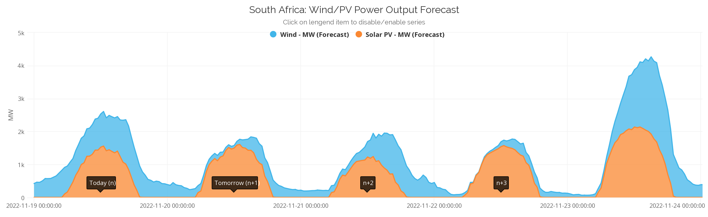
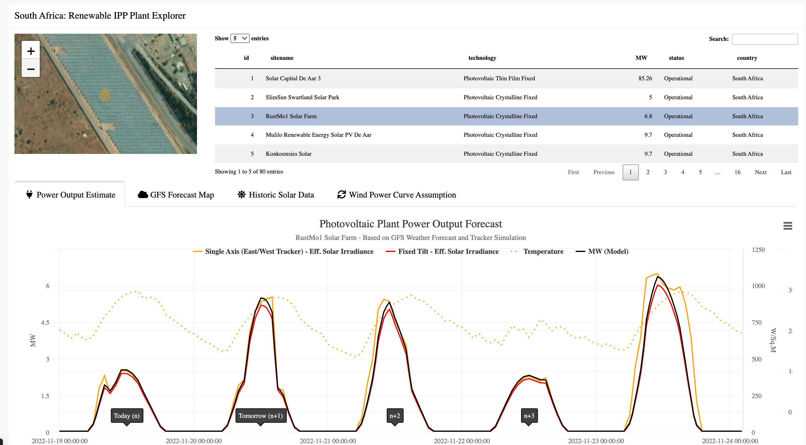
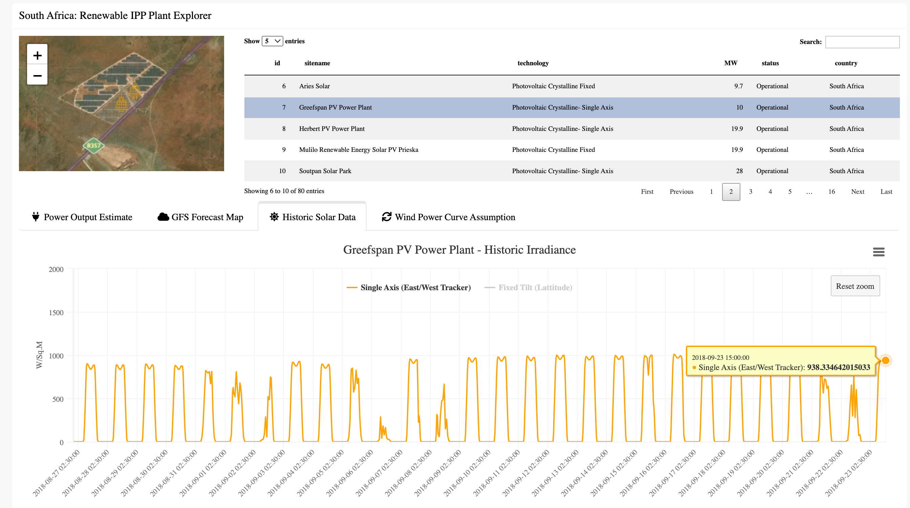
Solar Potential exploratory tool developed in DIAS (In house R shiny framework - before R shiny existed)
Part1: Regression model mapping the relationship between historic AC power output and cams satellite irradiance (good estimates) after solar tracking transposition, this can be improved if metered (actual) historic solar irradiance data for the plant measured at site are made available. Below is a sample of the uncertainty of our current calibration regression model on average (6.87% hourly). 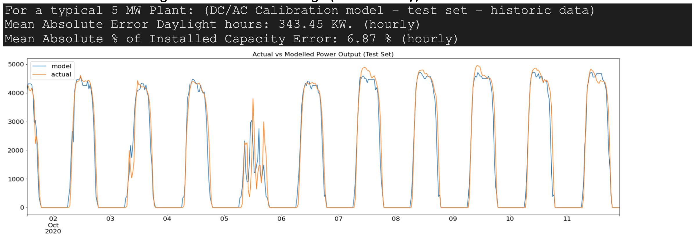
Part 2: After applying the global circulation hourly weather model (GFS) forecast (hourly weather forecasts have relatively high uncertainty) to model in Part 1, additional uncertainty is introduced, so as to produce the future hourly forecast. For example:
see difference between 1 day ahead and
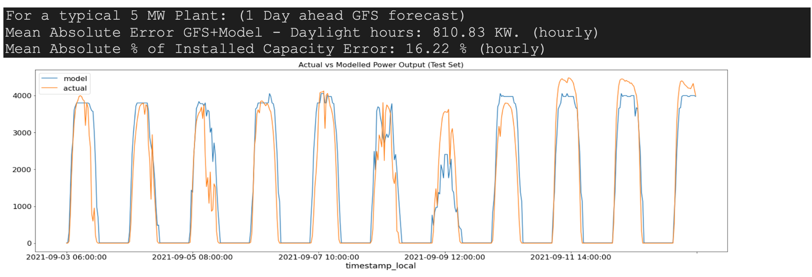
2 day ahead:
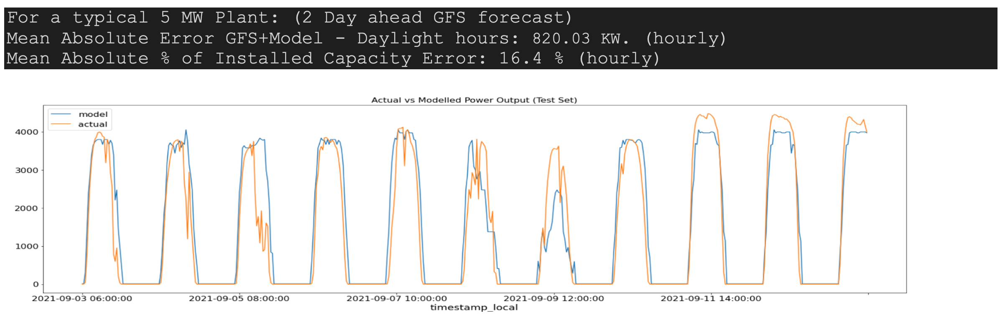
Using better weather models than GFS would obviously reduce uncertainty
Wind
- Developed week ahead hourly power forecast of Wind farms based on global circulation models (GFS), Wind power curves at air density, Wind speed at hub height based on terrain index.
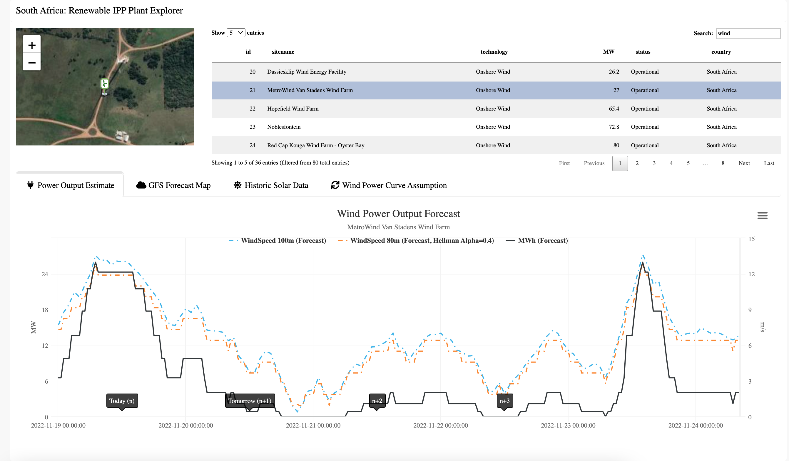
Hydro
Hydro modelling and exploratory analysis of the Zambezi basin system, using both a WEAP (Water evaluation and planning) optimization model and R. Converted an existing monthly WEAP model to an daily model using ERA5 (per hydro sub-basin) rainfall data, and specifically for the Kufue gorge hydro system. Random forest model for lake Kariba using both historic satelite dam level values and daily dam discharge values. Initial research was valuable.
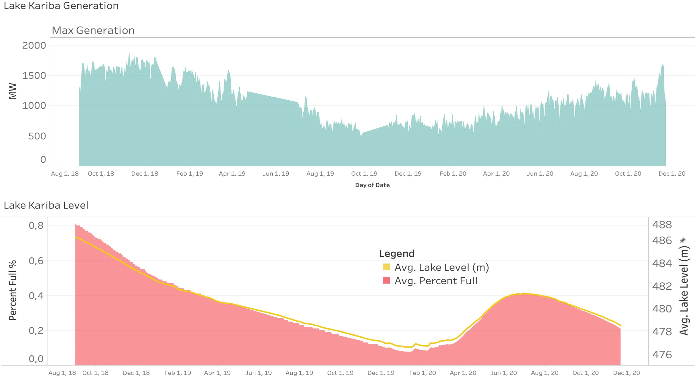
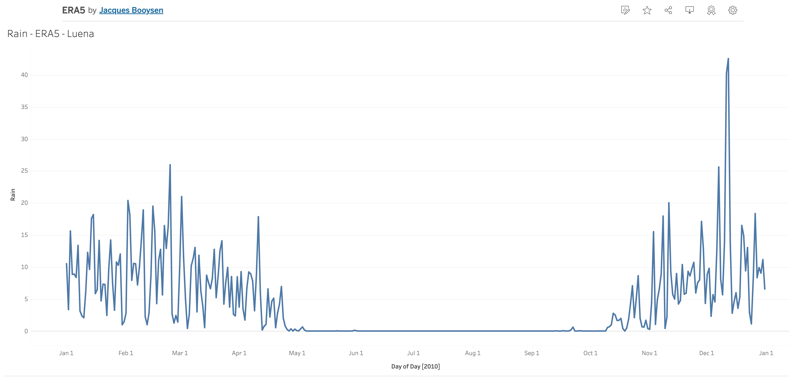
Climate Change Energy Model
Developed R Shiny App and assisted in modelling Monte Carlo Simulations using power pool least-cost energy MESSAGE model for the climate resilient infrastructure Development Facility (CRIDF) via a long term energy planning and scenario tool and climate change models to determine climatic and economic impacts in the region on the electricity grid in the Southern African power pool over the coming 30 years (2015-2045)
Video of me explaining the SAPP CRIDF model and tool.
Eskom Geo Based Load Forecasting
Domestic Building Density per LSM Estimates South Africa
Linked big and complex spatial data in Oracle Spatial, and developed a spatial filtering algorithm to exclude public spaces.
Filter out public space areas with open street map layers. Use spatial buffering algorithm below to further filter out public space. Find Nearest Neighbour (NN) distances distribution of all the buildings in each enumeration area. Finding nearest neighbour for 11,310,724 buildings in 80 000 areas. Buffer width = mean(NN) + 1.96 stddev (95th)
Draw Buffers around each building (red) merging into each other. Filter out buildings with nearest neighbour distances > mean(NN) + 2 stddev. New area size (red) is more robust and proved to exclude public space undetected before.

Example where algorithm excludes a public park in an enumeration area
Overlayed with Google street view and Spatial LSM intelligence:
Inter connector Feasibility Study ANNA
Energy modelling of ANNA 400kV interconnector between Angola and Namibia (Interconnector Impact Study)
Utilisation of a least-cost energy flow Electricity Market Model in MESSAGE, to estimate the energy flows and changes in energy flows within and between the interconnected SAPP power pool countries 20 years ahead, given the proposed construction of the ANNA 400kV interconnector between Angola and Namibia, with a transfer capability of 700MW ANNA; with a proposed commissioning and operational year 2025 under a most likely base scenario, and limited variant scenarios. Developed in MESSAGE – based on IRENA model, A dynamic, bottom-up, multi-year energy system model applying linear & mixed-integer optimization techniques.
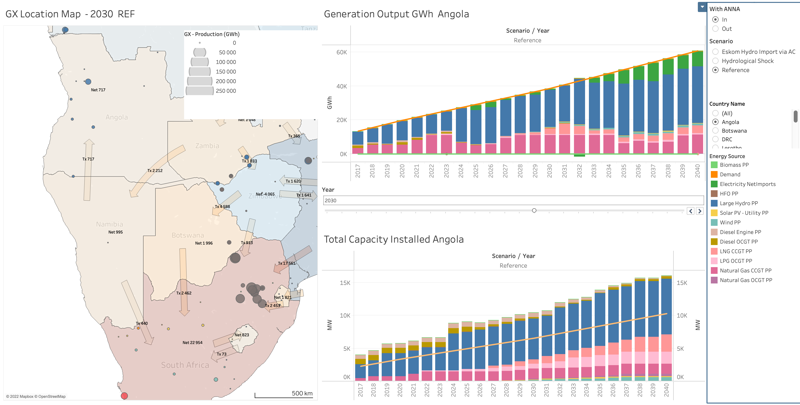
Base case (ANNA IN - build)

Hydro-logical Shock (ANNA IN - build)

ANNA OUT (not build)
Market Analysis SAPP/EAPP
SAPP EAPP - Energy Modelling
Assistant modeler and dashboard developer. The Optimization model estimates least-cost energy flows 20 years ahead within & between interconnected SAPP-EAPP (Southern/Eastern African Power Pool) countries and power pools, Developed in MESSAGE – based on IRENA model, A dynamic, bottom-up, multi-year energy system model applying linear & mixed-integer optimization techniques. Results are shown over a medium to long term till 2040 and for different scenarios.Each country modelled as a node interconnected by cross-border Tx Lines.
Least cost energy modelling (misc)
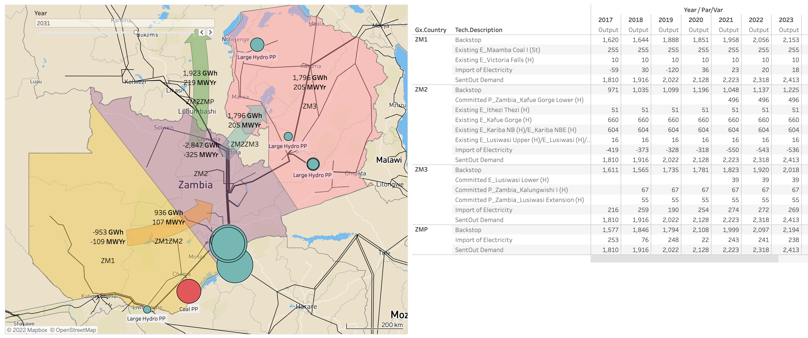
SAPP Pool Price Forecasting
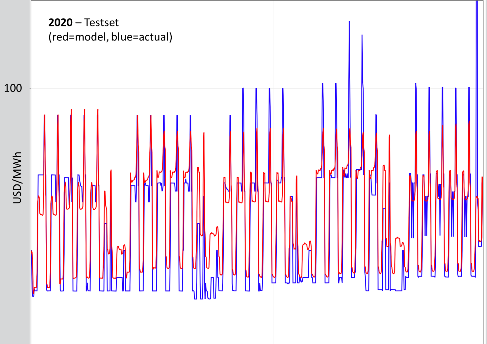
Can forecast the price trend, but better data needed for price spikes.
MAE: 22 USD/MWh
Footnotes
This page was created by me with Quarto https://quarto.org/↩︎